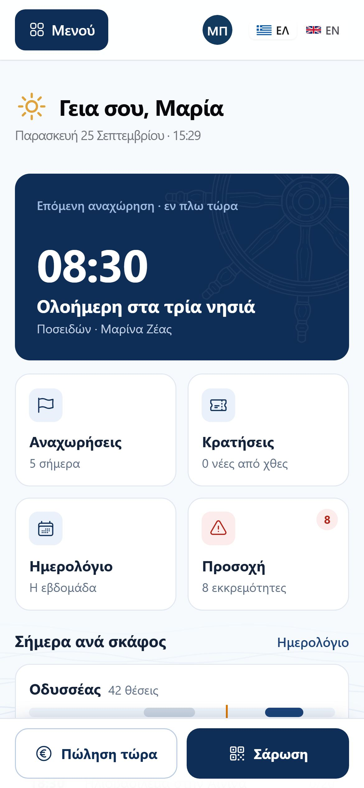
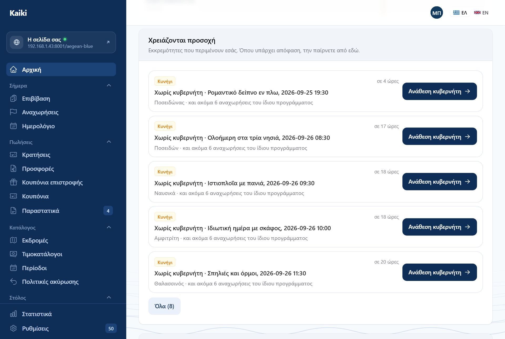
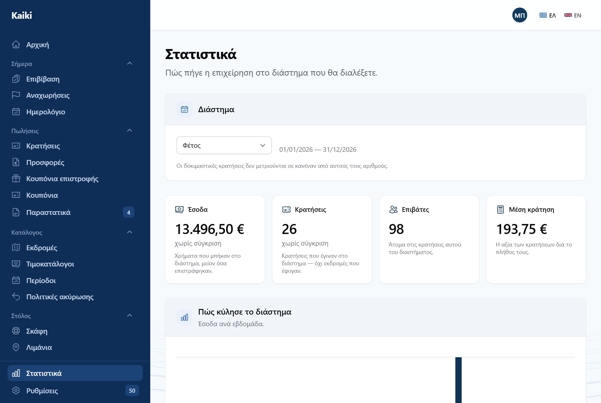
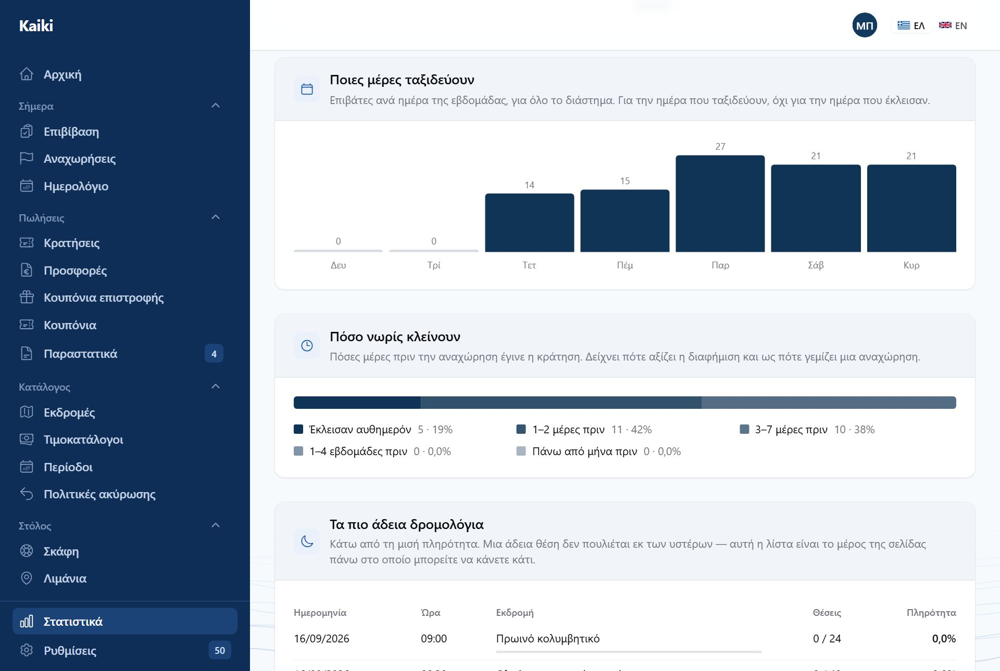
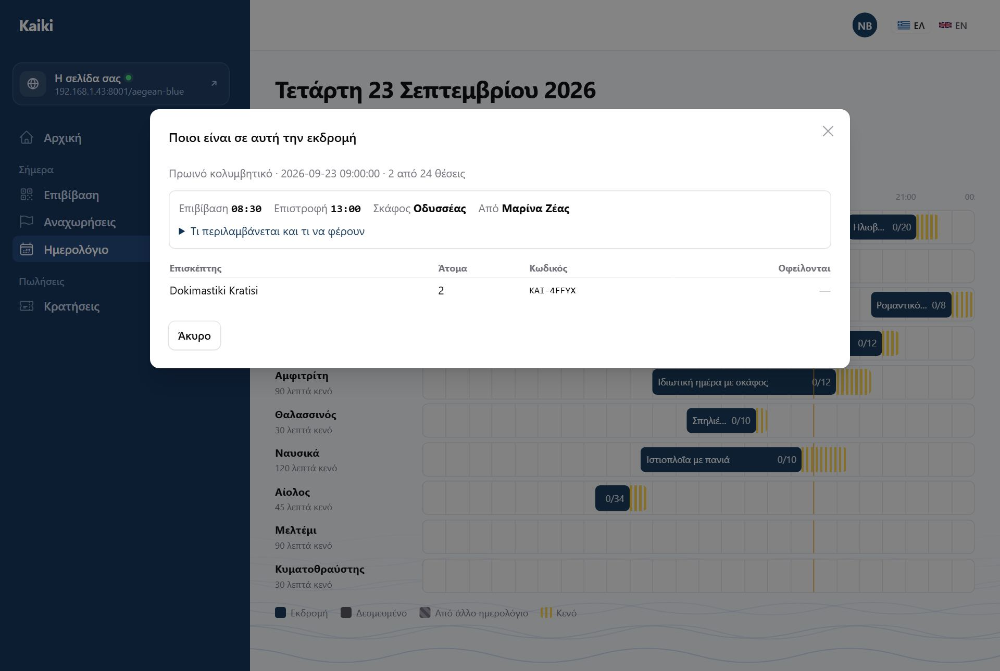

Ο πίνακας ελέγχου το πρωί, οι αναχωρήσεις μέσα στη μέρα, η επιβίβαση στην προβλήτα. Αυτό το μέρος είναι το μεγαλύτερο γιατί εδώ περνάτε τον χρόνο σας.
Είναι η πρώτη οθόνη μετά τη σύνδεση, και στο μενού λέγεται Αρχική. Όποιος συνδέεται έρχεται εδώ — όχι στην κάμερα της σάρωσης — εκτός αν πήγαινε σε συγκεκριμένη σελίδα, οπότε ανοίγει εκείνη. Από πάνω προς τα κάτω:

Στο κινητό η μπάρα υπάρχει μόνο στην αρχική. Αν σας επιτρέπεται μία μόνο ενέργεια, πιάνει όλο το πλάτος· αν καμία, δεν υπάρχει μπάρα.
Ο νέος λογαριασμός βλέπει πάνω από όλα αυτά τη λίστα «Τα πρώτα σας βήματα» (Μέρος Β), μέχρι να έχει λιμάνι, σκάφος και εκδρομή δημοσιευμένη.

Είναι λίστα αποφάσεων: πράγματα που περιμένουν εσάς. Το πιο συχνό είναι μια αναχώρηση κάτω από το ελάχιστο άτομα που έχετε ορίσει, λίγες ώρες πριν φύγει. Δίπλα της δύο κουμπιά: «Φεύγει κανονικά» ή «Ακύρωση και ενημέρωση επιβατών». Αν είναι πολλές, το «Όλα» από κάτω τις ανοίγει όλες.
Δεν είναι η ίδια λίστα με το «Τι πήγε στραβά», που είναι πράγματα που προσπάθησε το σύστημα και δεν τα κατάφερε — εκείνα έχουν κουμπί επανάληψης, αυτά θέλουν άνθρωπο.
Πιο κάτω, το πλαίσιο «Καιρός» δείχνει τις μέρες που η πρόγνωση ξεπερνά το όριο ανέμου κάθε σκάφους, και τι είναι κλεισμένο σε αυτές.
Η παλιά αρχική είχε έξι μετρητές — υπόλοιπα, εισπράξεις εβδομάδας, προσφορές σε αναμονή και άλλα. Έφυγαν για να μείνει η οθόνη ήσυχη. Τα χρήματα τα βλέπετε στα Στατιστικά, τις αναχωρήσεις με λίγα άτομα στα «Χρειάζονται προσοχή».

Πάνω πάνω διαλέγετε διάστημα: τελευταίες 30 ημέρες, αυτόν τον μήνα, τον προηγούμενο, φέτος, ή δικές σας ημερομηνίες. Η επιλογή μπαίνει στη διεύθυνση της σελίδας, οπότε μπορείτε να τη στείλετε στον λογιστή σας όπως είναι.
Κάθε μπλοκ γράφει τι ακριβώς μετράει, γιατί δεν μετράνε όλα το ίδιο πράγμα — και μια κράτηση του Ιουνίου για εκδρομή του Αυγούστου, πληρωμένη σε δύο δόσεις, ανήκει σε τρεις διαφορετικούς μήνες ανάλογα με την ερώτηση:
| Μπλοκ | Τι μετράει |
|---|---|
| Έσοδα | Χρήματα που μπήκαν μέσα στο διάστημα, μείον όσα επιστράφηκαν. Αυτό είναι που συμφωνεί με τον λογαριασμό σας. |
| Κρατήσεις και επιβάτες | Πωλήσεις που έγιναν μέσα στο διάστημα. Αυτό απαντά αν έπιασε μια καμπάνια. |
| Πληρότητα | Σκάφη που έφυγαν. Μόνο δρομολόγια που έχουν ήδη φύγει: ένα δρομολόγιο του επόμενου μήνα δεν έχει άδειες θέσεις, έχει θέσεις που δεν πουλήθηκαν ακόμη. |
Ακολουθούν τα έσοδα σε γράφημα («Πώς κύλησε το διάστημα»), ανά εκδρομή και ανά σκάφος· η πληρότητα συνολικά, ανά μήνα και ανά εκδρομή· δύο ακόμη γραφήματα, «Ποιες μέρες ταξιδεύουν» (επιβάτες ανά ημέρα της εβδομάδας) και «Πόσο νωρίς κλείνουν» (πόσες μέρες πριν την αναχώρηση έγινε η κράτηση)· από πού ήρθαν οι κρατήσεις· οι κωδικοί έκπτωσης που χρησιμοποιήθηκαν· και οι ακυρώσεις.

Η λίστα με τα δρομολόγια που έφυγαν κάτω από τη μισή πληρότητα. Είναι το μέρος της σελίδας πάνω στο οποίο μπορείτε να κάνετε κάτι: μια άδεια θέση δεν πουλιέται εκ των υστέρων, αλλά μια ώρα που φεύγει πάντα μισοάδεια μπορεί να αλλάξει.
Πόσοι είδαν τις σελίδες σας, πόσοι άνοιξαν μια εκδρομή, πόσοι έφτασαν στην πληρωμή, πόσοι πλήρωσαν. Το μετράμε εμείς — καμία υπηρεσία τρίτου, κανένα cookie, τίποτα στον υπολογιστή του επισκέπτη, άρα ούτε μπάνερ συγκατάθεσης στις σελίδες σας.
Επειδή δεν παρακολουθούμε κανέναν από βήμα σε βήμα, δεν μπορούμε να πούμε «τόσοι στους εκατό από όσους κοίταξαν, έκλεισαν». Αυτό που μπορούμε να πούμε είναι πόσες φορές έγινε το καθένα, και η αναλογία μεταξύ δύο διαδοχικών βημάτων. Ένας αριθμός που λέγεται κάτι που δεν είναι, είναι χειρότερος από κανέναν αριθμό.

Από κάθε γραμμή φτάνετε στα δύο πράγματα που χρειάζεστε τη μέρα της εκδρομής: την κατάσταση επιβατών και την επεξεργασία της συγκεκριμένης αναχώρησης.
Το έγγραφο για το λιμεναρχείο. Περιλαμβάνει το σκάφος, τον κυβερνήτη, τον αριθμό νηολογίου, την ώρα και τους επιβάτες με ονόματα.
Η στήλη με αριθμούς ταυτότητας ή διαβατηρίου δεν βγαίνει από μόνη της. Όποιος τη ζητήσει καταγράφεται στο ιστορικό ενεργειών: ποιος, πότε και για ποια αναχώρηση. Δεν είναι έλλειψη εμπιστοσύνης — είναι το ότι ένας κατάλογος με αριθμούς διαβατηρίων είναι έγγραφο που πρέπει να ξέρετε πού πήγε.

Ανοίγοντας μία κράτηση βλέπετε τι πληρώθηκε και πότε, τι οφείλεται, τους επιβάτες, το ιστορικό της, και τις ενέργειες: σήμανση ως πληρωμένη για μετρητά ή κατάθεση, ακύρωση κράτησης, αφαίρεση ατόμων και επιστροφή.
Το παράθυρο γράφει πόσα έχει πληρώσει ο πελάτης και πόσα δίνει σήμερα η πολιτική. Ρωτά ποιος ζήτησε την ακύρωση — ο πελάτης, ή εσείς (π.χ. πρόβλημα στο σκάφος) — και τι επιστρέφεται: ό,τι λέει η πολιτική, όλα τα χρήματα, άλλο ποσοστό, ή κουπόνι αντί για χρήματα. Όταν δεν ακολουθείτε την πολιτική, η αιτιολογία είναι υποχρεωτική και μένει στο ιστορικό. Οι θέσεις ελευθερώνονται αμέσως και ο πελάτης ενημερώνεται με email.
Για την κράτηση που γίνεται κανονικά, αλλά κάποιος δεν έρχεται. Διαλέγετε ποιοι επιβάτες αφαιρούνται — όποιος έχει ήδη επιβιβαστεί δεν εμφανίζεται — και βλέπετε πριν πατήσετε το νέο σύνολο και τι επιστρέφεται. Κάθε άτομο αφαιρείται στην τιμή που πλήρωσε. Οι θέσεις ελευθερώνονται και ο πελάτης παίρνει email και νέα εισιτήρια.
Ο πελάτης που τηλεφωνεί είναι ακόμη ο κανόνας, όχι η εξαίρεση. Η χειροκίνητη κράτηση κάνει ό,τι και η κράτηση από το internet, με δύο διαφορές που είναι δικές σας.
Υπάρχει διακόπτης που επιτρέπει να ξεπεράσετε το όριο μιας αναχώρησης — για την περίπτωση που ξέρετε κάτι που δεν ξέρει το σύστημα. Δεν ξεπερνά ποτέ το νόμιμο όριο του σκάφους, και η υπέρβαση καταγράφεται.

Με τα «← Προηγούμενη μέρα», «Σήμερα» και «Επόμενη μέρα →» αλλάζετε μέρα. Για να πάτε κατευθείαν σε μια μέρα — π.χ. τι έχει στις 15 Οκτωβρίου — διαλέγετε ημερομηνία στο πεδίο δίπλα τους (ηη/μμ/εεεε, η εβδομάδα ξεκινά Δευτέρα)· τα κουμπιά συνεχίζουν από εκεί. Το πλήρωμα βλέπει μόνο τις μέρες που του επιτρέπονται, και οι άλλες είναι γκρίζες.
Ο λόγος που ο χρόνος προετοιμασίας φαίνεται είναι το τηλεφώνημα «γιατί δεν με αφήνει να κλείσω στις 14:00;». Όταν είναι σχεδιασμένος, η απάντηση είναι στην οθόνη.
Από εδώ βάζετε και δεσμεύσεις σκάφους — συντήρηση, ιδιωτική χρήση, ό,τι κρατά ένα σκάφος εκτός πώλησης για ένα διάστημα.

Πατώντας μια εκδρομή στο ημερολόγιο ανοίγει η λίστα των επιβατών της. Πάνω από τη λίστα υπάρχει μια σύνοψη της εκδρομής: ώρα επιβίβασης, ώρα επιστροφής, σκάφος, λιμάνι, και διπλωμένο από κάτω «Τι περιλαμβάνεται και τι να φέρουν». Έτσι ο καπετάνιος ξέρει την εκδρομή του χωρίς να ανοίξει τον κατάλογο — και χωρίς να δει την τιμή της: ο κατάλογος και οι τιμοκατάλογοι μένουν κλειστοί για το πλήρωμα.
Δύο οθόνες, γιατί η προβλήτα και το γραφείο είναι δύο διαφορετικά μέρη. Και δύο τρόποι σε καθεμιά: σαρώνετε το QR του εισιτηρίου, ή πατάτε δίπλα στο όνομα.
Ο έλεγχος επιβίβασης είναι προαιρετικός. Αν δεν τον κάνετε — ξέρετε ποιοι έρχονται, τους βλέπετε μπροστά σας — μας το λέτε και κλείνει ολόκληρος: καμία από τις δύο οθόνες, κανένα QR στα εισιτήρια. Η κατάσταση επιβατών τυπώνεται κανονικά, η αναχώρηση ολοκληρώνεται κανονικά, και η κράτηση κλείνει την ημέρα της όπως πάντα.

Πάνω από τη λίστα γράφει και το σύνολο — «5 από 8 επιβιβάστηκαν» — που είναι ό,τι χρειάζεστε για να ξέρετε πότε λύνετε κάβους.

Τη βρίσκετε από τον σύνδεσμο «Χωρίς σήμα στην προβλήτα;» στην οθόνη «Επιβίβαση». Ανοίξτε την πριν φύγετε από το γραφείο: δουλεύει χωρίς σήμα μόνο αφού έχει φορτώσει μία φορά.
Σαρώνετε ή πατάτε «Επιβίβαση» δίπλα στο όνομα, βλέπετε αμέσως ποιος ανέβηκε, και όταν επανέλθει το σήμα φεύγουν όλα μαζί. Πάνω δεξιά λέει καθαρά «Σε σύνδεση» ή «Χωρίς σήμα» — αλλιώς δεν ξέρετε αν το τικ σημαίνει «το ξέρει το γραφείο» ή «το ξέρει αυτό το κινητό».
Τα QR των νέων εισιτηρίων δείχνουν σε αυτή τη σελίδα. Όσα έχουν ήδη τυπωθεί συνεχίζουν να δουλεύουν με την παλιά — ένα QR σε χαρτί μέσα σε τσάντα δεν ξαναεκδίδεται.
Αν δεν σαρώνετε εισιτήρια — ένα σκάφος, λίγοι επιβάτες που τους ξέρετε — η επιβίβαση με QR κλείνει από την πλατφόρμα, κατόπιν συνεννόησης. Τότε τα εισιτήρια βγαίνουν χωρίς QR, και στις δύο οθόνες φεύγει το πεδίο σάρωσης και μένει η λίστα με ένα πάτημα δίπλα σε κάθε όνομα. Η σελίδα χωρίς σήμα δουλεύει κανονικά.
Όλα τα άλλα μένουν ίδια: η ώρα που ανοίγει η επιβίβαση, η πρόωρη επιβίβαση με αιτιολογία, το «Δεν εμφανίστηκε», το σύνολο πάνω από τη λίστα. Όσα εισιτήρια είχαν ήδη σταλεί με QR δεν σαρώνονται πια· οι επιβάτες τους επιβιβάζονται από τη λίστα.
Η μία ενέργεια που δεν θέλετε να κάνετε βιαστικά, και η μία που πάντα γίνεται βιαστικά. Γι' αυτό είναι σε δύο βήματα.
Οι προειδοποιήσεις καιρού στον πίνακα βγαίνουν από πρόγνωση για το λιμάνι αναχώρησης, σε σχέση με τα μποφόρ που έχετε δηλώσει ανά σκάφος. Είναι πληροφορία, όχι εντολή: τίποτε δεν ακυρώνεται αυτόματα, ποτέ.